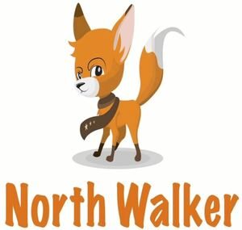

Trade Mark Journal No.2025/020 16 May 2025
WO0000001843073 (25,35)
Office of origin: Turkey
Date of International Registration:31 May 2024
Date of designation in the UK:
31 May 2024

- Class 25
- Footwear: shoes, slippers, sandals; inner-outer clothing, socks, scarves, shawls, bandanas, scarves, belts made of all kinds of materials except for protective purposes; headwear: hats, caps, berets, skullcaps, caps.
- Class 35
- Office functions; secretarial services, newspaper subscription arranging services, compilation of statistics, office machine rental services, systematization of information in computer databases, telephone answering services; organizing and holding auctions services; services related to advertising, marketing and public relations, organization of exhibitions and fairs for commercial and advertising purposes, design services for advertising purposes; online marketplace (website) provision services for buyers and sellers; business management, administration and consultancy on these issues, accounting, personnel placement, recruitment, personnel selection, import-export agency services; the bringing together, for the benefit of others, of a variety of goods, namely, jewellery, imitation jewellery, gold, precious stones and jewellery made thereof, cufflinks, tie pins, statuettes and figurines of precious metal, clocks, watches and chronometrical instruments, chronometers and their parts, watch straps, trophies made of precious metal, rosaries, unworked or semi-worked leather and animal skins, imitations of leather, stout leather, leather used for linings, goods made of leather, namely, tote bag, shoulder bag, sports bag, crossbody bag, wallet, imitations of leather or other materials, designed for carrying items, bags, wallets, boxes and trunks made of leather or stout leather, keycases, trunks [luggage], suitcases, umbrellas, parasols, sun umbrellas, walking sticks, whips, harness, saddlery, stirrups, straps of leather (saddlery), yarns and threads for textile use, threads and yarns for sewing, embroidery and knitting, thread, elastic yarns and threads for textile use, woven or non-woven textile fabrics, textile goods for household use, curtains, bed covers, sheets (textile), pillowcases, blankets, quilts, towels, flags, pennants, labels of textile, swaddling blankets, sleeping bags for camping, clothing, including underwear and outerclothing, other than special purpose protective clothing, socks, mufflers [clothing], shawls, bandanas, scarves, belts [clothing], footwear, shoes, slippers, sandals, headgear, hats, caps with visors, berets, caps [headwear], skull caps, laces and embroidery, guipure lace, festoons, ribbons (haberdashery), ribbons and braid, reinforcing tapes for clothing, cords for clothing, letters and numerals for marking linen, embroidered emblems, badges for wear, not of precious metal, shoulder pads for clothing, buttons for clothing, fastenings for clothing, eyelets for clothing, zippers, buckles for shoes and belts, rivet buttons, adhesive tapes [haberdashery], fasteners, pins, other than jewellery, boxes for needles, needle cushions, hair pins, hair buckles, hair bands, decorative articles for the hair, not made of precious metal, wigs, hair extensions, electric or non-electric hair curlers, other than hand implements, enabling customers to conveniently view and purchase those goods, such services may be provided by retail stores, wholesale outlets, by means of electronic media or through mail order catalogues.
GENÇMEN İNŞAAT TEKSTİL TURİZM SANAYİ VE TİCARET LİMİTED ŞİRKETİ
Representative: ALİ DENİZ ÖĞRETEN, OSMANAĞA MAH. PAZAR YOLU SOK. NO: 2 İÇ KAPI NO: 114, İSTANBUL, TURKEY